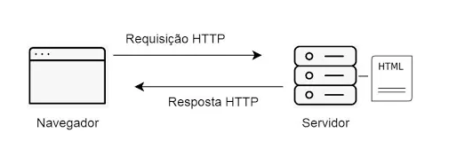
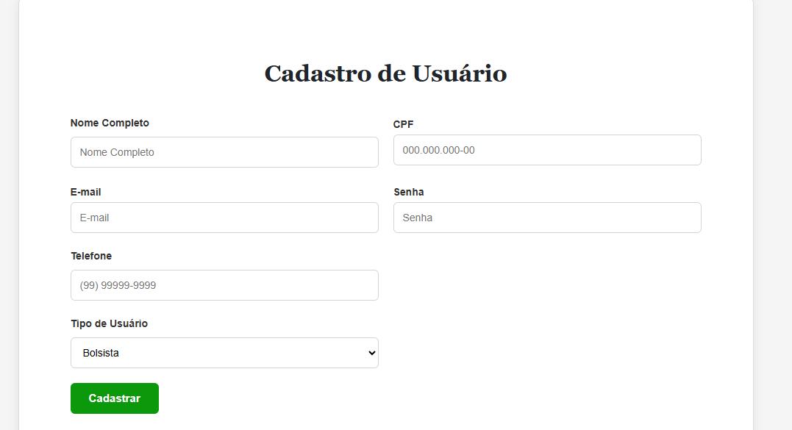
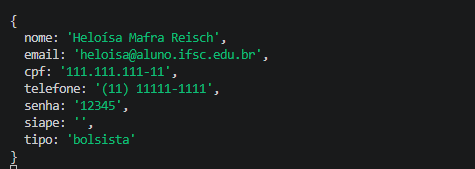
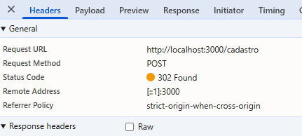
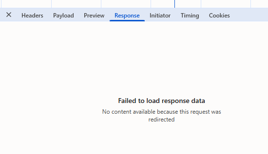
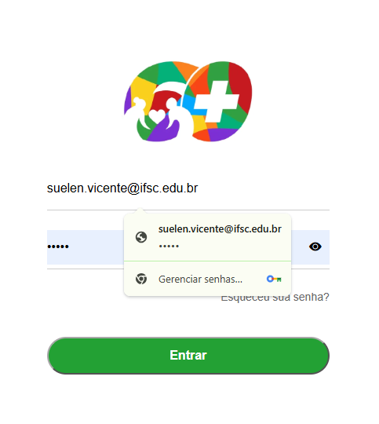

Ele funciona seguindo um modelo clássico de cliente-servidor através de um ciclo de requisição = Request e resposta = Response O HTTP funciona no modelo cliente-servidor (ou client-service, em Inglês). Neste modelo, o cliente é quem faz as requisições, ou seja, é quem solicita dados ou envia dados, e o servidor é quem responde às requisições, isto é, é quem envia os dados solicitados ou armazena os dados enviados.

As informações trocadas entre cliente e servidor também possuem um formato padrão. Nos dias atuais, o JSON (JavaScript Object Notation) é amplamente empregado e utiliza um modelo chave-valor. A imagem abaixo mostra a interface (formulário) na qual você insere as informações no lado do cliente (página web) e as informações como são enviadas para o servidor, em JSON.


A imagem abaixo apresenta uma requisição HTTP capturada por meio da ferramenta
de desenvolvedor do navegador, na aba Network. Nesse caso, foi realizada uma
requisição utilizando o método POST para o endereço
http://localhost:3000/cadastro.

http://localhost:3000/cadastro.3000.Ao acessar a aba Response da requisição, o navegador apresenta a mensagem "Failed to load response data". Isso ocorre porque a resposta do servidor possui o código de status 302 Found, indicando que a requisição foi redirecionada para outro endereço. Por esse motivo, o conteúdo da resposta original não está disponível nessa aba.

GET: é utilizada para solicitar ou consultar informações armazenadas no servidor. Por exemplo, quando o usuário acessa uma página de login, o navegador pode realizar uma requisição GET para solicitar ao servidor a página que será exibida. Na imagem abaixo, o navegador apresenta a tela de login que foi solicitada ao servido.
